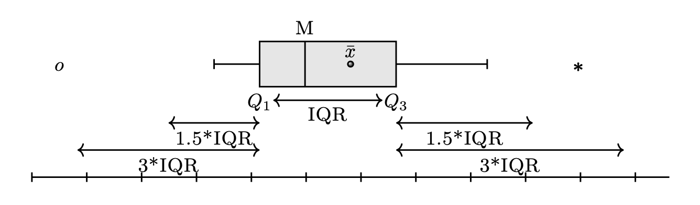

si installano anche le dipendenze 'beeswarm', 'vipor'
I pacchetti binari scaricati sono in
/var/folders/gw/hc72by314msbfbhm58gh0fgc0000gn/T//RtmpVlVs0C/downloaded_packages
ggbeeswarm installed
Introduzione
In questo capitolo ci concentreremo sull’analisi dei dati numerici. In particolare, esamineremo le distribuzioni di frequenza e i quantili, insieme alle tecniche di visualizzazione più comuni, come l’istogramma, l’istogramma smussato e il box-plot. Tratteremo sia gli aspetti computazionali che quelli interpretativi di queste misure, fornendo strumenti utili non solo per una comprensione personale, ma anche per la comunicazione efficace dei risultati, in particolare con chi utilizza questi dati per prendere decisioni pratiche nel mondo reale.
17.1 I dati sulle aspettative negative nella depressione
Consideriamo i dati relativi alle aspettative negative, individuate come un meccanismo chiave nel mantenimento della depressione (Zetsche et al., 2019). Supponiamo di voler analizzare la distribuzione di una singola variabile quantitativa.
Si noti che il nuovo DataFrame (con 67 righe) conserva il “nome” delle righe (ovvero, l’indice di riga) del DataFrame originario (con 1188 righe). Per esempio, il secondo soggetto (con codice identificativo 9) si trova sulla seconda riga del DataFrame, ma il suo indice di riga è 15. Questo non ha nessuna conseguenza perché non useremo l’indice di riga nelle analisi seguenti.
Nel linguaggio statistico, un’osservazione rappresenta l’informazione raccolta da un singolo individuo o entità che partecipa allo studio. Nel caso del dataset utilizzato da Zetsche et al. (2019), l’unità di osservazione è costituita dai partecipanti allo studio. Ogni riga del DataFrame, denominato df, corrisponde quindi a un individuo distinto incluso nell’analisi.
Le variabili, invece, riflettono le diverse caratteristiche degli individui o delle entità considerate. Per i dati in esame, questo concetto si esprime così:
Ogni colonna di df rappresenta una variabile che descrive una specifica proprietà comune ai partecipanti.
Le variabili sono identificate da etichette nelle colonne, come esa_id (l’identificativo del soggetto), mdd (il gruppo di appartenenza), e bdi (il punteggio del test BDI-II).
In termini simbolisi, per indicare una singola osservazione della variabile generica \(X\), si utilizza la notazione \(X_i\), dove \(i\) rappresenta l’indice dell’osservazione. Questo implica che abbiamo un valore diverso di \(X\) per ogni differente \(i\). Nel caso presente, con 67 osservazioni, \(i\) varia da 1 a 67. Così, per rappresentare la seconda osservazione (quella con \(i=2\)), useremo la notazione \(X_2\).
17.2 Distribuzioni di frequenza
Come osservato nell’output della sezione precedente, i dati grezzi non forniscono un’interpretazione immediata. Per rendere i dati più comprensibili e sintetici, è utile costruire una distribuzione di frequenza.
Una distribuzione di frequenza mostra quante volte i valori di una variabile si verificano all’interno di intervalli specifici. Nel caso dei punteggi BDI-II, possiamo raggruppare i punteggi in quattro classi:
0–13: depressione minima
14–19: depressione lieve-moderata
20–28: depressione moderata-severa
29–63: depressione severa
Ogni classe, denotata come \(\Delta_i\), rappresenta un intervallo di valori, definito come \([a_i, b_i)\) (aperto a destra) o \((a_i, b_i]\) (aperto a sinistra), dove \(a_i\) e \(b_i\) sono rispettivamente il limite inferiore e superiore della classe. A ciascuna classe si associa un’ampiezza, data da \(b_i - a_i\), e un valore centrale, indicato con \(\bar{x}_i\). Poiché ogni osservazione \(x_i\) appartiene a una sola classe \(\Delta_i\), possiamo calcolare le seguenti quantità:
Frequenza assoluta\(n_i\): il numero di osservazioni che rientrano nella classe \(\Delta_i\).
Proprietà: \(n_1 + n_2 + \dots + n_m = n\), dove \(n\) è il numero totale di osservazioni.
Frequenza relativa\(f_i\): la proporzione di osservazioni in ciascuna classe, calcolata come \(f_i = n_i/n\).
Proprietà: \(f_1 + f_2 + \dots + f_m = 1\).
Frequenza cumulata\(N_i\): il numero totale di osservazioni che rientrano nelle classi fino alla \(i\)-esima inclusa, calcolata come \(N_i = \sum_{j=1}^i n_j\).
Frequenza cumulata relativa\(F_i\): la somma delle frequenze relative fino alla \(i\)-esima classe, data da \(F_i = \frac{N_i}{n} = \sum_{j=1}^i f_j\).
Queste misure permettono di riassumere in modo efficace la distribuzione dei punteggi e facilitano l’interpretazione delle caratteristiche del campione.
17.2.1 Frequenze Assolute e Relative
Per ottenere la distribuzione di frequenza assoluta e relativa dei valori BDI-II nel dataset di zetsche_2019future, è necessario aggiungere al DataFrame df una colonna contenente una variabile categoriale che classifichi ciascuna osservazione in una delle quattro classi che descrivono la gravità della depressione. Questo risultato si ottiene utilizzando la funzione cut().
Il primo argomento, x, è un vettore unidimensionale (ad esempio, un vettore di tipo numeric o una colonna di un DataFrame) che contiene i dati da classificare.
Il secondo argomento, breaks, definisce gli intervalli delle classi, specificandone i limiti inferiori e superiori.
L’argomento include.lowest = TRUE garantisce che il limite inferiore dell’intervallo più basso sia incluso nella classificazione. Nel nostro caso, questo è particolarmente utile per assicurare che i valori uguali al limite inferiore siano assegnati correttamente.
Di seguito, il codice per aggiungere la variabile categoriale al DataFrame:
# Creare una variabile categoriale per classi di depressionedf<-df%>%mutate( bdi_class =cut(bdi, breaks =c(0, 13.5, 19.5, 28.5, 63), include.lowest =TRUE))
Questo codice suddivide i valori della variabile bdi in quattro intervalli corrispondenti ai livelli di gravità della depressione:
0–13: depressione minima
14–19: depressione lieve-moderata
20–28: depressione moderata-severa
29–63: depressione severa
Ogni osservazione verrà assegnata al corrispondente intervallo, creando così una nuova colonna bdi_class nel DataFrame df.
Le variabili possono anche essere analizzate insieme tramite le distribuzioni congiunte di frequenze. Queste distribuzioni rappresentano l’insieme delle frequenze assolute o relative ad ogni possibile combinazione di valori delle variabili. Ad esempio, se l’insieme di variabili \(V\) è composto da due variabili, \(X\) e \(Y\), ciascuna delle quali può assumere due valori, 1 e 2, allora una possibile distribuzione congiunta di frequenze relative per \(V\) potrebbe essere espressa come \(f(X = 1, Y = 1) = 0.2\), \(f(X = 1, Y = 2) = 0.1\), \(f(X = 2, Y = 1) = 0.5\), e \(f(X = 2, Y = 2) = 0.2\). Come nel caso delle distribuzioni di frequenze relative di una singola variabile, le frequenze relative di una distribuzione congiunta devono sommare a 1.
Per i dati dell’esempio precedente, la funzione prop.table() può essere utilizzata anche per produrre questo tipo di tabella: basta indicare le serie corrispondenti alle variabili considerate come valori degli argomenti bdi_class e group.
Un istogramma rappresenta graficamente una distribuzione di frequenze. Un istogramma mostra sulle ascisse i limiti delle classi \(\Delta_i\) e sulle ordinate la densità della frequenza relativa della variabile \(X\) nella classe \(\Delta_i\). La densità della frequenza relativa è misurata dalla funzione costante a tratti \(\varphi_n(x)= \frac{f_i}{b_i-a_i}\), dove \(f_i\) è la frequenza relativa della classe \(\Delta_i\) e \(b_i - a_i\) rappresenta l’ampiezza della classe. In questo modo, l’area del rettangolo associato alla classe \(\Delta_i\) sull’istogramma sarà proporzionale alla frequenza relativa \(f_i\). È importante notare che l’area totale dell’istogramma delle frequenze relative è uguale a 1.0, poiché rappresenta la somma delle aree dei singoli rettangoli.
Per fare un esempio, costruiamo un istogramma per i valori BDI-II di Zetsche et al. (2019). Con i quattro intervalli individuati dai cut-off del BDI-II creo una prima versione dell’istogramma – si notino le frequenze assolute sull’asse delle ordinate.
ggplot(df, aes(x =bdi))+geom_histogram( breaks =c(0, 13.5, 19.5, 28.5, 63),aes(y =after_stat(density)),)+labs( title ="Istogramma delle frequenze relative", x ="BDI-II", y ="Densità")
Anche se nel caso presente è sensato usare ampiezze diverse per gli intervalli delle classi, in generale gli istogrammi si costruiscono utilizzando intervalli riportati sulle ascisse con un’ampiezza uguale.
ggplot(df, aes(x =bdi))+geom_histogram(aes(y =..density..),)+labs( title ="Istogramma delle frequenze relative", x ="BDI-II", y ="Densità")#> Warning: The dot-dot notation (`..density..`) was deprecated in ggplot2 3.4.0.#> ℹ Please use `after_stat(density)` instead.#> `stat_bin()` using `bins = 30`. Pick better value with `binwidth`.
17.4 Kernel density plot
Confrontando le due figure precedenti, emerge chiaramente una limitazione dell’istogramma: la sua forma dipende dall’arbitrarietà con cui vengono scelti il numero e l’ampiezza delle classi, rendendo difficile interpretare correttamente la distribuzione dei dati.
Per superare questa difficoltà, possiamo utilizzare una tecnica alternativa chiamata stima della densità kernel (KDE) – si veda l’?sec-kde. Mentre l’istogramma utilizza barre per rappresentare i dati, la KDE crea un profilo smussato che fornisce una visione più continua e meno dipendente dall’arbitrarietà delle classi.
Immaginiamo un istogramma con classi di ampiezza molto piccola, tanto da avere una curva continua invece di barre discrete. Questo è ciò che fa la KDE: smussa il profilo dell’istogramma per ottenere una rappresentazione continua dei dati. Invece di utilizzare barre, la KDE posiziona una piccola curva (detta kernel) su ogni osservazione nel dataset. Queste curve possono essere gaussiane (a forma di campana) o di altro tipo. Ogni kernel ha un’altezza e una larghezza determinate da parametri di smussamento (o bandwidth), che controllano quanto deve essere larga e alta la curva. Tutte le curve kernel vengono sommate per creare una singola curva complessiva. Questa curva rappresenta la densità dei dati, mostrando come i dati sono distribuiti lungo il range dei valori.
La curva risultante dal KDE mostra la proporzione di casi per ciascun intervallo di valori. L’area sotto la curva in un determinato intervallo rappresenta la proporzione di casi della distribuzione che ricadono in quell’intervallo. Per esempio, se un intervallo ha un’area maggiore sotto la curva rispetto ad altri, significa che in quell’intervallo c’è una maggiore concentrazione di dati.
La curva di densità ottenuta tramite KDE fornisce dunque un’idea chiara di come i dati sono distribuiti senza dipendere dall’arbitrarietà della scelta delle classi dell’istogramma.
Crediamo un kernel density plot per ciascuno dei due gruppi di valori BDI-II riportati da Zetsche et al. (2019).
ggplot(df, aes(x =bdi, fill =group))+geom_density()+scale_fill_okabe_ito(order =c(5, 1, 3, 4, 2, 6, 7, 8, 9))+labs( title ="Curva di densità KDE", x ="BDI-II", y ="Densità")
17.5 Consigli per Creare Visualizzazioni di Dati Efficaci
Ecco alcuni suggerimenti per creare visualizzazioni di dati esplicative, efficaci e di qualità adatta alle presentazioni:
Messaggio chiaro: Assicurati che il grafico trasmetta un messaggio chiaro e immediato (ad esempio, “Il livello di benessere psicologico dei partecipanti aumenta nel tempo”).
Uso del colore:
Utilizza i colori in modo ponderato e con moderazione.
Non eccedere nell’uso dei colori solo perché è possibile farlo.
Limita l’uso a non più di cinque o sei colori in una singola figura.
Verifica che le scelte cromatiche non distorcano le conclusioni della figura.
Evita l’uso contemporaneo di rosso e verde nello stesso grafico, poiché queste tonalità sono difficili da distinguere per le persone daltoniche.
Guidare l’attenzione:
Utilizza dimensioni, colori e testo per guidare l’attenzione del pubblico.
Evidenzia elementi particolari del grafico per enfatizzare punti chiave.
Gestione del sovraccarico visivo:
Utilizza la trasparenza per ridurre il “sovrapplotting” (che si verifica quando ci sono molti elementi sovrapposti nel grafico, come punti o linee, rendendo difficile individuare i pattern).
Questa tecnica è particolarmente utile quando si visualizza una grande quantità di dati.
Se il dataset è molto ampio e l’aggiunta di trasparenza non è sufficiente, considera la visualizzazione di un sottocampione dei dati (un campione casuale di punti dati, scelto senza sostituzione). Questa tecnica è nota come sottocampionamento.
Elementi testuali:
I titoli, le etichette degli assi e il testo delle legende devono essere chiari e facilmente comprensibili.
Gli elementi della legenda dovrebbero essere ordinati in modo logico e coerente.
17.6 Forma di una Distribuzione
In statistica, la forma di una distribuzione descrive come i dati sono distribuiti intorno ai valori centrali. Si distingue tra distribuzioni simmetriche e asimmetriche, e tra distribuzioni unimodali e multimodali. Un’illustrazione grafica è fornita nella figura seguente. Nel pannello 1, la distribuzione è unimodale con asimmetria negativa; nel pannello 2, la distribuzione è unimodale con asimmetria positiva; nel pannello 3, la distribuzione è simmetrica e unimodale; nel pannello 4, la distribuzione è bimodale.
Distribuzioni
Il grafico della densità di kernel (Kernel Density Plot) dei valori BDI-II nel campione di Zetsche et al. (2019) è bimodale. Questo indica che le osservazioni della distribuzione si raggruppano in due cluster distinti: un gruppo di osservazioni tende ad avere valori BDI-II bassi, mentre l’altro gruppo tende ad avere valori BDI-II alti. Questi due cluster di osservazioni corrispondono al gruppo di controllo e al gruppo clinico nel campione di dati esaminato da Zetsche et al. (2019).
17.7 Indici di posizione
17.7.1 Quantili
La distribuzione dei valori BDI-II di Zetsche et al. (2019) può essere sintetizzata attraverso l’uso dei quantili, che sono valori caratteristici che suddividono i dati in parti ugualmente numerose. I quartili sono tre quantili specifici: il primo quartile, \(q_1\), divide i dati in due parti, lasciando a sinistra il 25% del campione; il secondo quartile, \(q_2\), corrisponde alla mediana e divide i dati in due parti uguali; il terzo quartile lascia a sinistra il 75% del campione.
Inoltre, ci sono altri indici di posizione chiamati decili e percentili che suddividono i dati in parti di dimensioni uguali a 10% e 1%, rispettivamente.
Per calcolare i quantili, i dati vengono prima ordinati in modo crescente e poi viene determinato il valore di \(np\), dove \(n\) è la dimensione del campione e \(p\) è l’ordine del quantile. Se \(np\) non è un intero, il valore del quantile corrisponde al valore del dato che si trova alla posizione successiva alla parte intera di \(np\). Se \(np\) è un intero, il valore del quantile corrisponde alla media dei dati nelle posizioni \(k\) e \(k+1\), dove \(k\) è la parte intera di \(np\).
Gli indici di posizione possono essere utilizzati per creare un box-plot, una rappresentazione grafica della distribuzione dei dati che è molto popolare e può essere utilizzata in alternativa ad un istogramma.
Ad esempio, per calcolare la mediana della distribuzione dei nove soggetti con un unico episodio di depressione maggiore del campione clinico di Zetsche et al. (2019), si determina il valore di \(np = 9 \cdot 0.5 = 4.5\), che non è un intero. Pertanto, il valore del secondo quartile è pari al valore del dato che si trova alla posizione successiva alla parte intera di \(np\), ovvero \(q_2 = x_{4 + 1} = 27\). Per calcolare il quantile di ordine \(2/3\), si determina il valore di \(np = 9 \cdot 2/3 = 6\), che è un intero. Quindi, il valore del quantile corrisponde alla media dei dati nelle posizioni \(6\) e \(7\), ovvero \(q_{\frac{2}{3}} = \frac{1}{2} (x_{6} + x_{7}) = \frac{1}{2} (33 + 33) = 33\).
Usiamo quantile() per trovare la soluzione dell’esercizio precedente.
Il box plot è uno strumento grafico che visualizza la dispersione di una distribuzione. Per creare un box plot, si disegna un rettangolo (la “scatola”) di altezza arbitraria, basato sulla distanza interquartile (IQR), che corrisponde alla differenza tra il terzo quartile (\(q_{0.75}\)) e il primo quartile (\(q_{0.25}\)). La mediana (\(q_{0.5}\)) è rappresentata da una linea all’interno del rettangolo.
Ai lati della scatola, vengono tracciati due segmenti di retta, detti “baffi”, che rappresentano i valori adiacenti inferiore e superiore. Il valore adiacente inferiore è il valore più basso tra le osservazioni che è maggiore o uguale al primo quartile meno 1.5 volte la distanza interquartile. Il valore adiacente superiore è il valore più alto tra le osservazioni che è minore o uguale al terzo quartile più 1.5 volte la distanza interquartile.
Se ci sono dei valori che cadono al di fuori dei valori adiacenti, vengono chiamati “valori anomali” e sono rappresentati individualmente nel box plot per evidenziare la loro presenza e posizione. In questo modo, il box plot fornisce una rappresentazione visiva della distribuzione dei dati, permettendo di individuare facilmente eventuali valori anomali e di comprendere la dispersione dei dati.

Utilizziamo un box-plot per rappresentare graficamente la distribuzione dei punteggi BDI-II nel gruppo dei pazienti e nel gruppo di controllo.
ggplot(df, aes(x =group, y =bdi))+geom_boxplot()+labs( title ="Box plot per gruppo", x ="Gruppo", y ="BDI-II")
Un risultato migliore si ottiene utilizzando un grafico a violino (violin plot) e includendo anche i dati grezzi.
17.8.2 Grafico a Violino
I grafici a violino combinano le caratteristiche dei box plot e dei grafici di densità di kernel (KDE plot) per offrire una rappresentazione più dettagliata dei dati. A questi grafici vengono sovrapposti i dati grezzi, fornendo una visione completa della distribuzione e delle caratteristiche dei dati.
ggplot(df, aes(x =group, y =bdi, fill =group))+geom_violin()+geom_dotplot( binaxis ="y", stackdir ="center", dotsize =0.5, fill =1)+scale_fill_okabe_ito(order =c(5, 1, 3, 4, 2, 6, 7, 8, 9))+labs( title ="Violin plot con overlay dei punti grezzi", x ="Gruppo", y ="BDI-II")#> Bin width defaults to 1/30 of the range of the data. Pick better value with#> `binwidth`.
17.8.3 Grafico Beeswarm
Il pacchetto {ggbeeswarm} include una funzione chiamata geom_beeswarm, che può essere utilizzata per creare un grafico beeswarm in ggplot2.
Un grafico beeswarm è una variazione del grafico a punti che disperde i dati in modo che non si sovrappongano, rendendo visibili tutti i singoli punti dati. Questo tipo di visualizzazione è particolarmente utile quando si desidera esaminare la distribuzione e la densità di un set di dati, senza ricorrere all’uso di barre d’errore o di scatole e baffi (boxplot), mantenendo un’alta leggibilità anche quando i set di dati sono densi.
ggplot(df, aes(x =group, y =bdi, color =group))+geom_beeswarm(cex =3)+labs( title ="Violin plot con overlay dei punti grezzi", x ="Gruppo", y ="BDI-II")
17.9 Riflessioni Conclusive
Abbiamo esplorato diverse tecniche per sintetizzare e visualizzare i dati, includendo distribuzioni di frequenze, istogrammi e grafici di densità. Questi strumenti sono essenziali per comprendere meglio i dati e presentare risultati in modo chiaro e informativo.